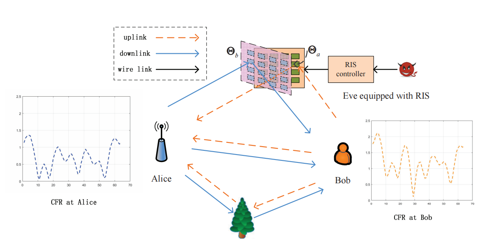

On the RIS Manipulating Attack and Its Countermeasures in Physical-layer Key Generation
优秀论文
“忠臣or内奸？[智能反射表面RIS]在[物理层密钥生成PKG]中的身份大揭秘”~这里有“忠臣雪中送炭”、"安能辨我是忠奸"、“智斗静默内奸”多个名场面，精彩内容不容错过哦～请各位大侠多多指导～
论文简介
智能超表面(RIS)是一种新的范例，可以重新配置无线环境。基于此特征，可以使用RIS来促进物理层密钥生成(PKG)。
这篇论文提出了一种RISM，通过迅速改变上行和下行通道中的虹膜反射系数，减少了无线通道的互易性。
我们提出了一种基于路径分离的平滑率检测方法。从时间域移除攻击路径，并使用灵活的量化方法来最大化KGR。
实现的结果
一
在传统的基于CFR的方法中，我们在通道互易性和RISM关键的量化步骤中表现出脆弱性。
二
采用平滑的速度检测方法和灵活的量化来消除攻击路径并改善kgr。可以获得高检出率的数字结果。